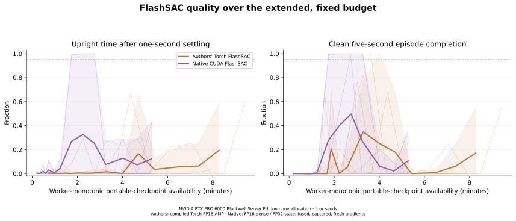
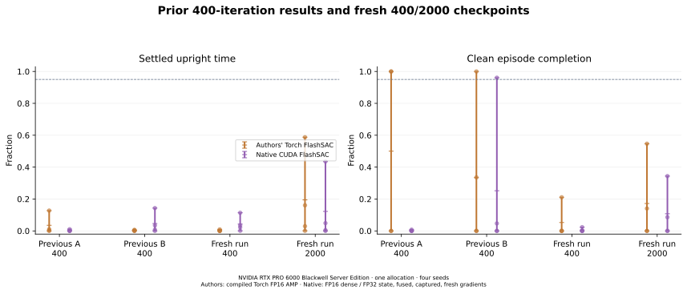
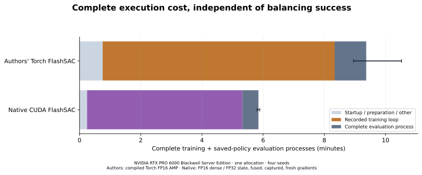
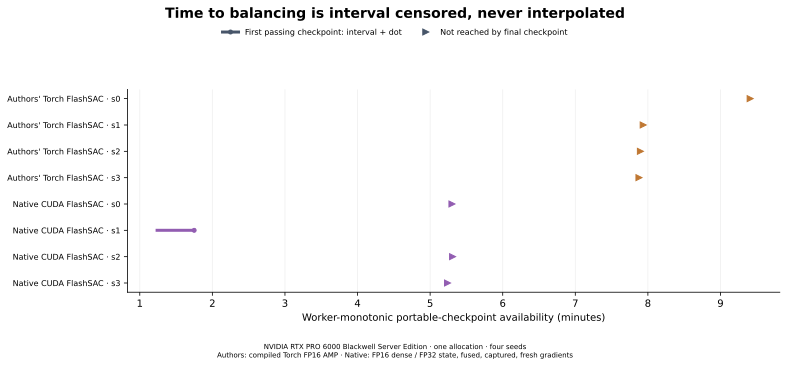

Duration-only learning follow-up · 26 October 2026
Pristine authors' Torch FlashSAC and native CUDA FlashSAC, unchanged recipes, four fresh seeds on one NVIDIA RTX PRO 6000 Blackwell Server Edition GPU allocation.
Native CUDA FlashSAC used 33.4% less full training-process time than the authors' Torch implementation (median paired ratio; 4/4 matched runs faster). Execution time and successful learning are separate outcomes.
Authors' Torch FlashSAC: 0/4 runs passed the balancing gate at 2,000 iterations; 0/4 passed at both 1,750 and 2,000, and 0/4 passed at any saved checkpoint. No run met the quality gate in this budget.
Native CUDA FlashSAC: 0/4 runs passed the balancing gate at 2,000 iterations; 0/4 passed at both 1,750 and 2,000, and 1/4 passed at any saved checkpoint. All seed outcomes and any later regressions are retained.
This study measures learning, not only update throughput. Four seeds on one allocation do not establish statistical significance, quality noninferiority or broad hardware generalization.
Each of eight fresh runs trains for 2,000 iterations, 1,024 environments and 16 control steps per iteration: 32,768,000 transitions/run. Only duration, the extra saved-policy checkpoints, two-recipe execution order and a final replay export change from the previous experiment. Networks, losses, rewards, reset states, physics, action scale, replay capacity 131,072, one-step returns, two critic attempts per eligible vector step and the 12,800-call learning-rate decay remain fixed. The decay is deliberately not stretched with the longer run.
The 14 common evaluations occur at 0, 50, 100, 150, 200, 300, 400, 600, 800, 1,000, 1,200, 1,500, 1,750 and 2,000 iterations. Every evaluation uses the exact same 128 initial states from the old study. The balancing gate requires 95% clean five-second completion and 95% upright time after one-second settling, with |wrapped pole angle| < 0.2 rad and finite actions. Pole falling does not terminate this task; survival alone is not balancing. Failed first episodes remain failed, and later autoresets never replace them.
| Recipe | Iteration | Gate | Settled upright | Full upright | Clean timeout | Angle RMS(rad) | Episode steps |
|---|---|---|---|---|---|---|---|
| Authors' Torch FlashSAC | 400 | 0/4 | 0.2% | 1.2% | 5.3% | 1.884 | 64.6 |
| Authors' Torch FlashSAC | 2000 | 0/4 | 19.5% | 23.7% | 17.2% | 0.966 | 124.2 |
| Native CUDA FlashSAC | 400 | 0/4 | 4.3% | 8.5% | 0.6% | 0.671 | 89.9 |
| Native CUDA FlashSAC | 2000 | 0/4 | 12.2% | 16.0% | 10.7% | 0.875 | 120.4 |
Scalar values are four-seed means; every seed and observed range remains visible below. Angle RMS uses active first-episode steps and must be read with full-budget upright time and survival.
Native CUDA FlashSAC seed 1 was the only run to pass any saved checkpoint. It passed at iterations 600, 800, 1,000, then failed every saved evaluation from 1,200 through 2,000. Its deterministic evaluated action RMS (normalized action units) rose from 0.121 at 1,000 to 0.600 at 1,200. This records a loss of balancing stability; it does not establish a cause or show that longer training will recover it.




| Scope | Native lower | Median native/official | Observed range | Every paired seed |
|---|---|---|---|---|
| training loop seconds | 4/4 | 0.7011 | 0.5858–0.7082 | s0: 0.5858; s1: 0.7012; s2: 0.7082; s3: 0.7011 |
| training process seconds | 4/4 | 0.6659 | 0.5636–0.6724 | s0: 0.5636; s1: 0.6665; s2: 0.6724; s3: 0.6654 |
| end to end seconds | 4/4 | 0.6465 | 0.5573–0.6572 | s0: 0.5573; s1: 0.6450; s2: 0.6572; s3: 0.6480 |
A lower ratio means less execution time. The descriptive consistency criterion requires all four full-training-process ratios below 1 on this allocation; it never determines whether results are reported. Lower wall without meeting the balancing gate is not faster successful learning.
| Recipe | Seed | 400 upright | 2000 upright | Final gate | Gate at 300 & 400 | Gate at 1,750 & 2,000 | Train(s) | Train+eval(s) | Completed/attempted(skips) |
|---|---|---|---|---|---|---|---|---|---|
| Authors' Torch FlashSAC | 0 | 0.00% | 58.78% | False | False | False | 568.40 | 631.60 | actor: 31902/31903 (1); critic: 63776/63806 (30); temperature: 31903/31903 (0) |
| Authors' Torch FlashSAC | 1 | 0.00% | 0.07% | False | False | False | 479.40 | 542.17 | actor: 31900/31903 (3); critic: 63774/63806 (32); temperature: 31903/31903 (0) |
| Authors' Torch FlashSAC | 2 | 0.00% | 2.95% | False | False | False | 477.17 | 537.64 | actor: 31902/31903 (1); critic: 63775/63806 (31); temperature: 31903/31903 (0) |
| Authors' Torch FlashSAC | 3 | 0.93% | 16.06% | False | False | False | 475.88 | 537.07 | actor: 31903/31903 (0); critic: 63774/63806 (32); temperature: 31903/31903 (0) |
| Native CUDA FlashSAC | 0 | 11.39% | 4.88% | False | False | False | 320.37 | 352.01 | actor: 31897/31903 (6); critic: 63789/63806 (17); temperature: 31903/31903 (0) |
| Native CUDA FlashSAC | 1 | 2.23% | 0.00% | False | False | False | 319.51 | 349.68 | actor: 31898/31903 (5); critic: 63790/63806 (16); temperature: 31903/31903 (0) |
| Native CUDA FlashSAC | 2 | 0.08% | 43.54% | False | False | False | 320.84 | 353.35 | actor: 31898/31903 (5); critic: 63790/63806 (16); temperature: 31903/31903 (0) |
| Native CUDA FlashSAC | 3 | 3.51% | 0.49% | False | False | False | 316.64 | 348.03 | actor: 31898/31903 (5); critic: 63788/63806 (18); temperature: 31903/31903 (0) |
| Recipe | Seed | Environment(s) | Prepare(s) | Loop(s) | Checkpoint(s) | Full replay save(s) | Continuation MB | Metrics IO(s) | Eval process(s) |
|---|---|---|---|---|---|---|---|---|---|
| Authors' Torch FlashSAC | 0 | 6.59 | 0.00 | 521.84 | 1.15 | 0.06 | 44.24 | 0.23 | 63.20 |
| Authors' Torch FlashSAC | 1 | 6.52 | 0.00 | 434.62 | 1.11 | 0.06 | 44.24 | 0.23 | 62.77 |
| Authors' Torch FlashSAC | 2 | 6.61 | 0.00 | 432.33 | 1.11 | 0.06 | 44.24 | 0.23 | 60.47 |
| Authors' Torch FlashSAC | 3 | 6.50 | 0.00 | 430.83 | 1.11 | 0.06 | 44.24 | 0.22 | 61.19 |
| Native CUDA FlashSAC | 0 | 6.57 | 0.46 | 305.70 | 1.40 | 0.08 | 44.88 | 0.23 | 31.64 |
| Native CUDA FlashSAC | 1 | 6.60 | 0.46 | 304.75 | 1.37 | 0.08 | 44.88 | 0.23 | 30.17 |
| Native CUDA FlashSAC | 2 | 6.63 | 0.46 | 306.18 | 1.35 | 0.08 | 44.88 | 0.22 | 32.51 |
| Native CUDA FlashSAC | 3 | 6.55 | 0.46 | 302.04 | 1.36 | 0.08 | 44.88 | 0.22 | 31.39 |
Observed allocation protocol wall: 4000.05s from first smoke through final evaluation, including 20 worker processes. This excludes installation, source/fixture upload and artifact retrieval. Nested checkpoint/replay/logging costs are not added again to loop/process wall.
RoboLearn measured source · Isaac Lab source · Pristine authors' source · Derived audited data · Exact frozen protocol · Previous Cartpole report
FlashSAC: Donghu Kim and coauthors, Holiday Robotics, Fast and Stable Off-Policy Reinforcement Learning for High-Dimensional Robot Control. RoboLearn and Isaac Lab retain their contributors' authorship and licenses. The previous comparison includes PPO by Schulman and coauthors and stock RSL-RL.